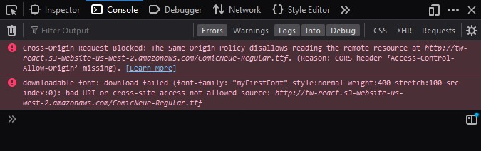

Por que já incluímos esse conteúdo por aqui? Porque provavelmente você vai se deparar com algo relacionado durante a execução dos projetos simulados. Não precisa estudar a fundo isso no momento, quando esse erro acontecer, lembre-se de voltar aqui e consultar este material.
O CORS (Cross-origin Resource Sharing) é um mecanismo utilizado pelos navegadores para compartilhar recursos entre diferentes origens. O CORS é uma especificação do W3C e faz uso de headers do HTTP para informar aos navegadores se determinado recurso pode ser ou não acessado.
Para compreender melhor, imagine que você está desenvolvendo uma aplicação web que consiste em um aplicativo e uma API. Tudo ocorre sem problemas no seu ambiente produção, mas ao fazer ao executar localmente você se depara com isso:
Isso acontece devido a um mecanismo de segurança presentes nos navegadores chamado de same-origin policy. Por motivos de segurança, navegadores restringem requisições cross-origin HTTP a partir de scripts. Assim, um aplicativo web que faz uso dessas APIs só poderá fazer requisições HTTP da mesma origem da qual o aplicativo foi carregado, a menos que a resposta da outra origem inclua os cabeçalhos CORS corretos.
Quando encontramos um erro de CORS, é importante verificar qual requisição está causando esse problema diretamente no console do seu navegador. Geralmente o problema é causado pela ausência de headers no lado do servidor.
Para corrigir esse problema, garanta que o servidor está enviando os seguintes headers na sua resposta:
Access-Control-Allow-Origin: *
Access-Control-Allow-Methods: POST, GET
Access-Control-Allow-Headers: *
Access-Control-Max-Age: 86400
Nesse exemplo, estamos permitindo que a qualquer origem acesse os recursos daquele servidor, sendo possível o uso dos métodos HTTP GET e POST, juntamente com qualquer header adicional.
Uma outra alternativa para desenvolvedores front-end que não querem se preocupar com esses passos de adicionar parâmetros no headers e que usamos muito quando estamos desenvolvendo é usar um serviço já pronto que faça um proxy para qualquer site que quisermos acessar, já colocando esses headers de permissão. Um que já utilizamos é o https://cors.eu.org/ por exemplo.
Você também pode buscar outras soluções na internet e mandar em nosso Discord que nossos facilitadores buscarão te auxiliar, caso isso aconteça por aí.